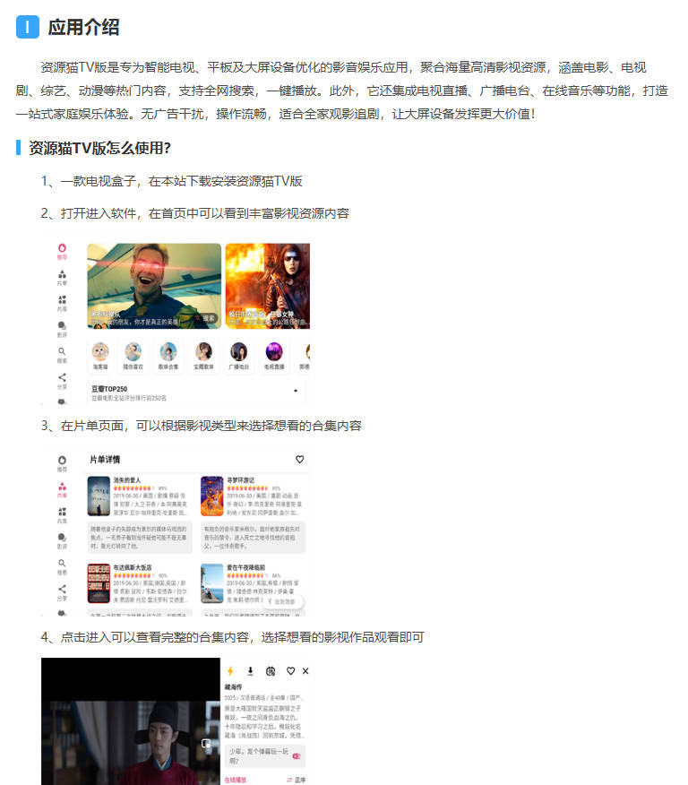

首页
影视分类
热门推荐
联系我们
资源猫TV - 汇集丰富影视资源的应用
资源猫TV是一款汇集丰富影视资源的应用，提供高清、流畅的观影体验，支持多种播放模式，适合追求高品质观影的用户。

应用特点
丰富资源：资源猫TV汇集了海量影视资源，满足用户的多样化需求。
高清画质：支持高清播放，提供极致的观影体验。
流畅播放：优化播放性能，确保观影过程流畅无卡顿。
多种模式：支持多种播放模式，用户可根据需求自由选择。
智能推荐：根据用户喜好智能推荐内容，发现更多精彩影视。
离线下载：支持离线下载功能，随时随地畅享观影乐趣。
多语言支持：支持多种语言，服务全球用户。
立即下载
更多资源